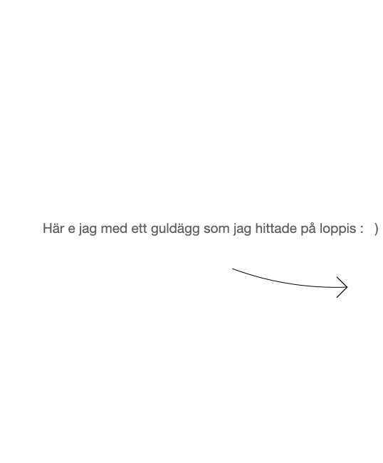
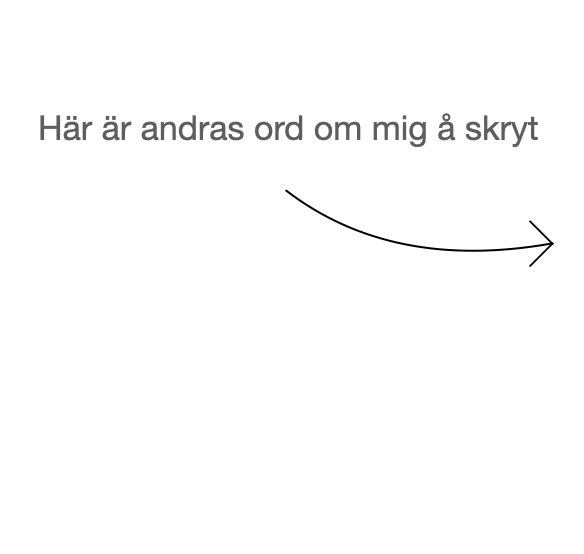

Är från Göteborg. Lärde mig att man äter rårakor med löjrom och lök och grejer när jag kom till Stockholm. Alltid ätit det med rårörda lingon och ovispad vispgrädde tidigare (tips!).
Blir glad av tanter som umgås, tågresor och dans. Blir mindre glad av att dammsuga, vara hungrig och tvingas be om hjälp med att öppna burkar.
